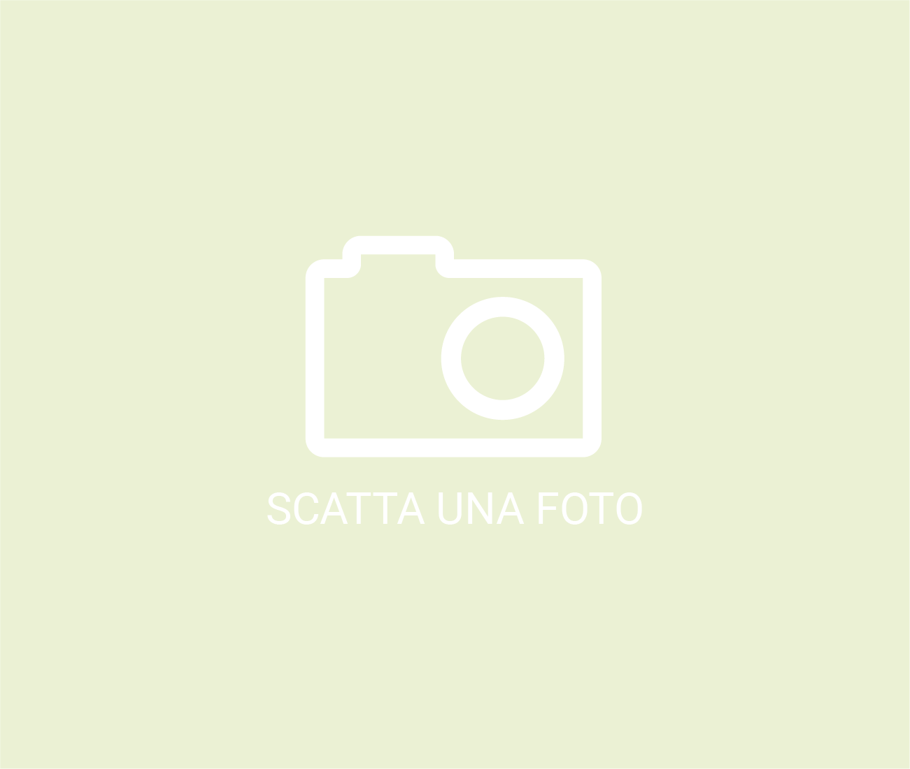

SCATTA UN SELFIE
PER SAPERNE DI PIÚ
Prima dell’entrata alla sala del museo dedicata al bosco in Augmented Reality, lungo le pareti del corridoio saranno istallati dei pannelli video in cui appariranno i selfie di tutti voi che avete contribuito a realizzare questa opera d’arte.
Sii protagonista del tuo viaggio e
delle tue esperienze!